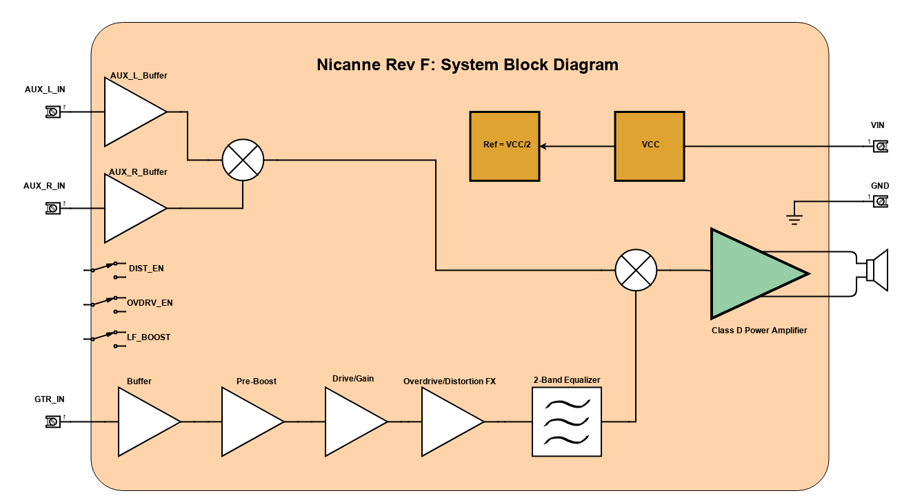

Project Nicanne: Class D Guitar Amplifier Series
| Author | Mark Angelo Tarvina |
|---|---|
| mttarvina@gmail.com | |
| Date Published | |
| Last Updated |
I. Overview
Nicanne is the codename for all my guitar amplifier projects. Audio power amplifiers were the first type of projects I ever worked on since undergrad. I started with pure transistor implementations of class A/B/AB amplifiers and eventually shifted to class D. Now I prefer class D amplifiers due to more efficient power consumption, can be designed and implemented in smaller board sizes, and less heat dissipation.
The design of Nicanne is based on the TPA3116D2 Filter-Free Class-D Stereo Amplifier Family IC from Texas Instruments. This means that the board could have 3 possible variants based on the variants available for the said IC. For the 100W version, one can install the TPA3116D2 IC on the board. For the 60W version, install the TPA3118D2. For the 30W version, install the TPA3130D2. The stereo output is set to operate in parallel in order to drive one speaker.
Nicanne has a dedicated guitar channel with built-in overdrive and distortion feature, an adjustable gain, and a 2 band equalizer for bass or treble frequency adjustment. A separate Aux channel can be used to input line audio from sources like MP3 players, smartphones, and PC/laptop devices through a TRS stereo connector. The combination of both channels is ideal for a solo guitar practice session with background music.
This documentation describes the full capability of the device, the design of circuit blocks, as well as practical test results. If you have comments/suggestions, feel free to send me an email in my address above.
I.A. Target Application and Target Audience
This project is meant for casual guitar players like me who are interested in how the electronics equipment between the guitar and the speaker works. This is meant for those who want a simple practice guitar amplifier that can be powered by a battery, with built-in features dedicated for guitar audio. Some aspects of the design of the guitar channel section in this project can also be used when designing guitar pedals, so for those who are interested in making their DIY pedals, I hope you can get something out of this. When it comes to audio quality output, I'll leave it to my demo videos. Personally, this sounds great to me, and there is no point in more tweaks to achieve something I cannot perceive anyway.
I.B. Feature Images
I.C. Specification
| Parameter | Value |
|---|---|
| Hardware Name | Nicanne |
| Hardware Revision | F |
| Hardware Design | Nicanne_RevF |
| PCB Dimension | Nicanne_RevF_PCB_Dimension |
| Power Output | 30W/60W/100W |
| Number of output channels | 1 |
| Compatible Speakers | 4Ohm/8Ohm/16Ohm (Full Range) |
| Power Amplifier Type | Class D |
| Input Voltage Supply Range | 9V - 26V DC |
| Auxiliary - Channel(s) | 1 |
| Auxiliary - Line Input Connection | Stereo TRS Plug |
| Guitar - Channel(s) | 1 |
| Guitar - Buffer | Yes |
| Guitar - Pre Boost | Yes |
| Guitar - Pre Boost Gain | 12dB - fixed |
| Guitar - Overdrive w/ enable switch | Yes |
| Guitar - Distortion w/ enable switch | Yes |
| Guitar - Low Frequency Cutoff Switch (for distortion/overdrive FX) | Yes (@ insert frequency) |
| Guitar - Gain Adjust | 0dB - 28dB |
| Guitar - Bass Boost/Cut @ 1kHz cutoff | Yes, +/-12dB |
| Guitar - Treble Boost/Cut @ 1kHz cutoff | Yes, +/-12dB |
II. System Block Diagram

The design consists of four main blocks:
- Guitar Section - covers the series of blocks from Buffer up to the 2-Band Equalizer
- Aux Section - covers both Left and Right channel line buffers and a mixer
- Power Amp Section - refers to the Class D Power Amplifier Block as well as the output speaker
- Power Supply Section - covers the input supply, VCC, and the reference voltage
II.A. Guitar Section
The guitar section consists of basic circuit blocks that amplifies the guitar signal to a more usable level, comparable to line audio. The buffer is a high input impedance section with close to unity gain that compensates for the high output impedance property of most guitar output. The signal from the buffer is then amplified by a fixed gain pre-boost stage. The drive/gain stage is adjustable so that the user can control how high is the signal amplitude that appears at the input of the overdrive/distortion stage. The overdrive/distortion stage can be set to enable overdrive only, distortion only, or disable both. When both overdrive and distortion are disabled, this stage simply acts as a buffer to the drive/gain stage. Lastly, the 2 band equalizer is a combination of a low pass and high pass filter with a cut-off frequency of 1kHz. Both filters are capable of boosting or cutting off the signal within their respective pass band. The output of the whole guitar section is then fed into a mixer right before the power amplifier stage.
II.B. Aux Section
The auxiliary section is simply a buffer for two channels of a stereo audio line input. These two channels are then mixed before being sent to the main mixer right before the power amplifier stage. There is no volume or gain control in this section. It is assumed that the input source for the auxiliary section is capable of increasing the amplitude of its output signal.
II.C. Power Amplifier Section
The power amp section is mainly composed of the TPA3116D2 IC (for a 100W variant) with its minimum application requirement for a parallel output configuration. There is a main mixer present right before the audio input of the IC, which combines the signal from the guitar section and the auxiliary section.
II.D. Power Supply Section
The power supply section provides power to all circuit blocks. The power amplifier section gets its supply directly from the input. Meanwhile, both the guitar and auxiliary section sources power from VCC, which is a more filtered version of the input supply. There is also a reference voltage equal to half of VCC that provides the reference level for the virtual ground used by all op-amps within the guitar and auxiliary section. The input supply can take input supply voltages between 9V and 26V DC.